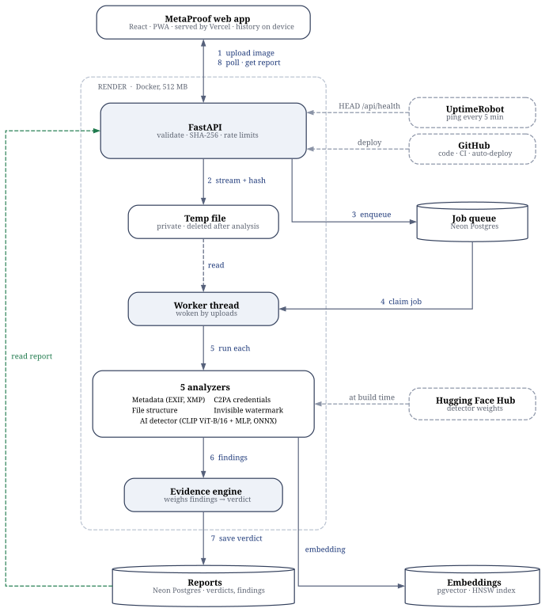
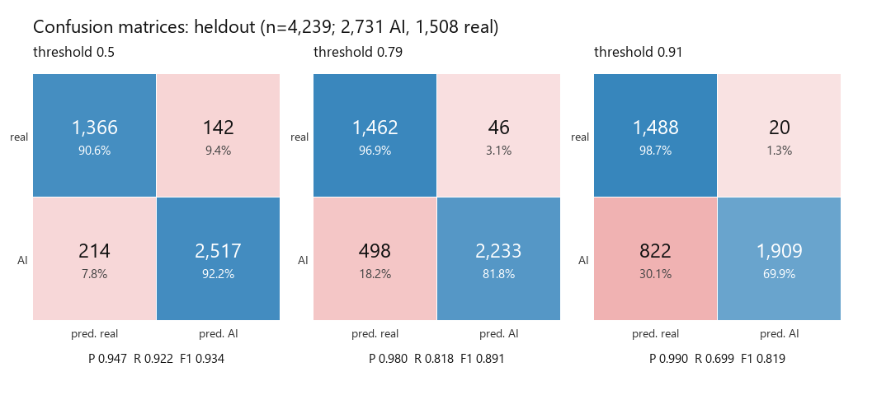
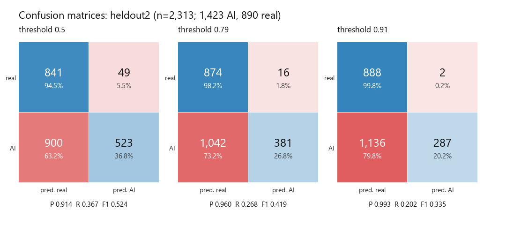

MetaProof checks an image's metadata, its file structure, its signed C2PA Content Credentials, invisible generator watermarks and its pixels, then combines the evidence into one explainable verdict: likely authentic, edited, likely AI-generated or inconclusive. Every verdict shows the evidence behind it, and the system says "inconclusive" rather than guess.
How to read this document. Chapters 1–4 give the big picture. Chapters 5–9 explain the internals and are the ones to study for viva or interview questions; chapter 7 is the model's benchmark. Chapters 15–17 are the honest assessment. Chapter 18 lists every library, service, dataset and tool used. Chapter 20 defines the technical terms.
Where the numbers come from. Every accuracy and timing figure here was measured by a script in the repository (named next to it) and recorded in ml/README.md, docs/evaluation.md or docs/benchmarks.md. None is estimated, except where it says so.
MetaProof is a full-stack web application, built from an empty repository, that answers one question about an uploaded image: what does the evidence say about where it came from? It is live, free to use, needs no account and deletes every uploaded file after analysis.
Wrongly calling a real photo fake is the costlier mistake. So missing data is never held against a file, the detector's score only decides a verdict on its own when it is very high, signed proof (C2PA) outranks statistical guesses, and when the evidence is weak the answer is inconclusive.
Images are easy to edit, recompress, re-upload and generate with AI. Checking them by eye is slow and unreliable. Pure AI detectors give a bare percentage, are often wrong on new generators and real photos, and do not explain themselves. A useful tool must gather several kinds of evidence, weigh them honestly and show its working.
| Evidence | What it can show | What it cannot show |
|---|---|---|
| Metadata (EXIF, XMP, PNG text) | Camera make and model, editing software, AI-generator tags (e.g. a Stable Diffusion prompt in a PNG chunk) | Metadata is easy to strip or forge, so it is weighed lightly |
| File structure | How the file was written: JPEG quality tables, segments, colour profile, data appended after the image | Explains the file only; every finding is neutral |
| C2PA Content Credentials | A cryptographically signed history: who created or edited it, with what tool, and whether it changed since signing | Most images have none, and re-saving removes them; absence proves nothing |
| Invisible watermark | The hidden mark Stable Diffusion 1.x/2.x and SDXL embed in their output | The mark usually does not survive resizing; absence proves nothing |
| AI-image detector | A calibrated probability that the pixels came from a generator | A probability, not proof; weaker on the newest generators |
| Verdict | Typical evidence |
|---|---|
| Likely authentic | Consistent camera metadata plus the structure of an untouched camera file, and no signs of AI. Requires more support than the other labels, because camera EXIF is easy to forge. |
| Edited | Editing software in the metadata, or signed C2PA edit actions. |
| Likely AI-generated | A signed C2PA "AI-generated" claim (decides on its own), a generator watermark, generator metadata, or a very high detector score. |
| Inconclusive | Not enough evidence, or evidence pointing different ways. This is the most common honest answer, because most images carry no provenance data. |
The project was planned in a written proposal, then built between 11 and 20 October 2026 (10 calendar days, 52 commits). Hours were not tracked with a timer, so the table below gives what the git history proves, and the long-running machine jobs recorded in the ML notes. Real effort was larger than the commit windows, because work happens before each commit and long downloads ran unattended.
| When | What was built | Commit window |
|---|---|---|
| 11 Oct, 17:17–18:56 | Backend core: upload pipeline, metadata and C2PA analyzers, rule-based evidence engine; Docker deployment on Render | 1.6 h |
| 11 Oct, 22:14–23:01 | Frontend, AI detector v1 integration, near-duplicate search, benchmarks, demo screenshots | 0.8 h |
| 12 Oct, 13:09–18:28 | Detector v2 data pipeline (2025–26 generators), detector v3 shipped, v4 experiment, full-resolution experiment, report polish | 5.3 h |
| 12 Oct, 22:52 | Full-resolution crop features (v5) for the detector | — |
| 20 Oct, 00:23–01:31 | Liquid-glass UI pass, toasts with undo, accessibility; file-structure analyzer, HEIC support, real progress, ELA view; report wording | 1.1 h |
| 20 Oct, 07:30 | Camera-photo calibration set; v6 retrain experiment; evaluation report; border trimming | — |
| 20 Oct, 19:14–20:10 | Production incident fix, cold-start resilience, merges, auto-deploy repair, dev database, uptime monitoring | 0.9 h |
| Total time between first and last commit of each session | 9.8 h | |
ml/README.md)| Job | Duration |
|---|---|
| Streaming ~17 GB of Community Forensics data and extracting CLIP features (v1), on an RTX 4050 laptop GPU | ~1 h per split at 5 MB/s |
| v2 data extraction (2025–26 generators) | ~1.5 h |
| VISION phone-photo download (~3 GB) | ~1 h |
| Wikimedia Commons camera originals for v6 (~8 GB, API-throttled) | ~3 h |
Honest estimate. Commit windows (9.8 h) plus recorded machine jobs (about 7–8 h) give a floor of roughly 17–18 hours. Planning, the proposal, reading papers and testing between commits are not in that figure. If you need an exact number for a report, use these as the documented minimum and add your own estimate for planning and study time.
The live API stopped answering. The investigation found three separate faults:
0004) had been applied to the production database from a laptop, but the deployed code was 8 days old and did not know that migration. On every start the container ran alembic upgrade head, which failed on the unknown revision, so the server never started and requests hung.Fixes: a manual deploy of the latest code; repository access restored for Render; the client now retries through cold starts (with a regression test); the worker no longer blocks startup on the database; database connections time out after 15 s; a separate dev database branch for local work; and UptimeRobot replaced the unreliable GitHub schedule. The lesson, in one line: never run migrations from a laptop against production.

documentation/architecture.py.upload; the real filename stays on the device). The API streams it to a private temp file, computing SHA-256 on the way, checks the real type from the file's bytes (not its extension), and decodes it once under a 25 MB size limit and a 30-megapixel limit, which also blocks decompression bombs.SELECT … FOR UPDATE SKIP LOCKED, so several workers could share the queue safely without Redis. It sleeps instead of polling, so the serverless database can scale to zero.current_step) is published so the page can tick off steps. One failing analyzer cannot sink the report./report/<sha256>.| Decision | Why |
|---|---|
| PostgreSQL as the job queue (no Redis) | One less service to run on free tiers; SKIP LOCKED is proven safe with concurrent workers (tested with 6 workers and 12 jobs, none claimed twice). |
| Worker inside the API process | Render's free tier allows one container; a thread keeps memory low. |
| Event-woken worker, not polling | Neon suspends idle databases; polling would keep it awake and use compute hours. |
| ONNX Runtime with 8-bit weights for serving | The fp32 model peaked at 557 MB, over Render's 512 MB; 8-bit weight-only fits (348 MB peak) with no accuracy loss. |
| Watermark decoder rewritten in numpy | The reference library imports PyTorch, far too heavy for the server; the port matches it bit for bit in tests. |
| Deduplicate by hash, search by embedding | Exact copies are found instantly; resized or recompressed copies are found by CLIP similarity. |
| History stored in the browser | No accounts, no personal data on the server. |
| Method | Path | Purpose |
|---|---|---|
| POST | /api/analyses | Upload an image; returns a job id (429 when rate-limited) |
| GET | /api/analyses/{job_id} | Job status, current step, verdict, findings per analyzer |
| GET | /api/analyses?ids=… | Summaries for the jobs this browser remembers |
| GET | /api/media/{sha256}/report | Shareable latest finished report for a file |
| GET | /api/media/{sha256}/similar | Near-duplicates analyzed before (pgvector) |
| GET | /api/media/{sha256}/thumbnail | Small WebP preview, cached for a year |
| GET | /api/status | Database size against the plan limit; last day's analyses and failures |
| GET, HEAD | /api/health | Health check for uptime monitoring (does not touch the database) |
Every analyzer turns the file into typed findings. A finding has a signal (authentic, edited, AI or neutral), a strength (weak, moderate, strong or conclusive) and a plain-language message. Raw output is stored too, so the report can show details.
Reads EXIF, XMP and PNG text chunks with Pillow; adds ExifTool's full tag dump when the binary is present (it is in the Docker image). Signals include camera make and model, editing software, generator names and prompts written by AI tools, and timestamps. GPS coordinates are never stored. Because metadata is easy to forge or strip, camera EXIF alone cannot make a file "likely authentic".
Lists JPEG segments and PNG, WebP and HEIF chunks, reads JPEG quantization tables and estimates the quality the file was saved at, names the ICC colour profile and measures data appended after the image. It explains how the file was written (for example, "saved by an editor at quality 85" or "camera-original structure"); every finding is neutral on its own, but it supports the authentic verdict. Includes HEIC/HEIF support (iPhone photos).
Reads and validates Content Credentials with the official c2pa-python SDK. It reports whether a manifest is present, whether it validates, who signed it, the recorded actions (created, edited, converted), any AI-generation source type (trainedAlgorithmicMedia), and the history of ingredients. A valid AI-generation claim is conclusive. A missing manifest is neutral. A manifest proves who signed and that the file has not changed since; it does not prove the scene is real.
Stable Diffusion 1.x/2.x and SDXL hide a fixed message in their output using the DWT-DCT method of the invisible-watermark library. MetaProof reimplements that decoder in numpy (the original needs PyTorch) and checks it bit for bit against the library in tests. Finding the mark is strong evidence; not finding it says nothing, because resizing or heavy recompression removes it.
A frozen CLIP ViT-B/16 image encoder plus a small trained head that outputs a calibrated probability, served with ONNX Runtime. Before scoring, added borders (meme caption bands, phone screenshot app bars) are trimmed. It also outputs the 512-dimensional embedding used for the "seen before" search. Chapter 6 covers it in depth.
The report includes an ELA view computed in the browser: the image is re-saved as JPEG and the difference is amplified, which can make regions with a different compression history stand out. It is shown as a visual aid for the reader, not counted as evidence, because ELA is easy to misread.
backend/app/engine.py, version 0.2.0-rules)| Strength | Weight |
|---|---|
| weak | 0.5 |
| moderate | 1.0 |
| strong | 2.0 |
| conclusive | 10.0 (decides alone) |
| Detector score | Becomes | Effect |
|---|---|---|
| ≥ 0.91 | strong AI evidence | Can decide a verdict alone. 70% of unseen-generator AI images and 1.3% of real images score this high. |
| 0.79 – 0.91 | weak AI evidence | Counts only together with other evidence. |
| 0.05 – 0.79 | neutral ("unsure") | No effect on the verdict. |
| < 0.05 | weak support for a real photo | A small push towards authentic. |
The thresholds were chosen on a held-out calibration split so that detector v3 flags no more real images than v1 did at its 0.95 threshold.
| Set | Images | AI | Real | Contents |
|---|---|---|---|---|
| v1 training | 25,751 | 11,714 | 14,037 | 12 named generators + ~150 Stable Diffusion variants (Community Forensics) |
| v1 calibration | 2,851 | 1,299 | 1,552 | Same generators as training, held out for calibration and thresholds |
| Added for v2/v3 | ~5,400 | ~5,400 | — | 18 generators from 2025 (Imagen 4, GPT-4o image, Seedream 3/4, Recraft v2/v3, HiDream, Reve, Ideogram 3, Hunyuan 2.1/3, Wan 2.2, Grok Aurora, Runway Frames, Lumina, Janus, SD3); max 600 distinct per generator |
| Added for v3 balance | ~6,000 | — | ~6,000 | LAION images (stock photos, logos, screenshots, renders) so "polished" is not a cue for AI |
| v3 training total (shipped) | 36,528 | 30 generators | Real images from COCO, LAION, Landscapes HQ, VISION, FFHQ and ImageNet | |
| Test: unseen generators (2023–24) | 4,239 | 2,731 | 1,508 | FLUX dev/schnell, Midjourney 6.1, DALL·E 3, Firefly 3, Imagen 3, Ideogram 2, Stable Cascade, SDXL-LCM |
| Test: newest generators (2026) | 2,313 | 1,423 | 890 | Nano Banana 1/Pro/2, FLUX.2, GPT Image 2, Qwen Image 2.1 |
| Test: robustness to edits | 928 | 577 | 351 | Each scored under 7 edits (crops, screenshot, filter, caption band, rotation, recompression) |
| Test: real camera originals | 1,304 | — | 1,304 | From 97 devices (VISION + Wikimedia Commons), plus 1,325 social-media copies; testing only, never trained on |
| Experiment v6 (not shipped) | 2,067 | — | 2,067 | Unedited camera originals from 189 other devices, 950 photographers |
| Experiment v4 (not shipped) | 2,400 | 1,200 | 1,200 | Nano Banana 2 images and matched real photos |
| Test | Threshold | Precision | Recall | F1 | Accuracy | Real flagged | ROC-AUC |
|---|---|---|---|---|---|---|---|
| 9 unseen generators | 0.5 | 0.947 | 0.922 | 0.934 | 91.6% | 9.4% | 0.972 |
| 0.91 | 0.990 | 0.699 | 0.819 | 80.1% | 1.3% | ||
| …after recompression | 0.5 | 0.899 | 0.956 | 0.927 | 90.2% | 19.5% | 0.967 |
| 0.91 | 0.981 | 0.784 | 0.872 | 85.1% | 2.7% | ||
| Newest 2026 generators | 0.5 | 0.914 | 0.368 | 0.524 | 59.0% | 5.5% | 0.770 |
| 0.91 | 0.993 | 0.202 | 0.335 | 50.8% | 0.2% |
Source: ml/eval_metrics.py → ml/results_metrics.json; also docs/evaluation.md. Recompression = 50% downscale plus JPEG quality 60. Calibration error 1.1%.
| Generator | Images | AUC | Caught |
|---|---|---|---|
| Stable Cascade | 300 | 0.989 | 97.7% |
| Firefly Image 3 | 302 | 0.989 | 97.4% |
| DALL·E 3 | 301 | 0.986 | 96.4% |
| Midjourney 6.1 | 324 | 0.975 | 93.8% |
| Imagen 3 | 301 | 0.973 | 92.0% |
| FLUX dev | 300 | 0.972 | 92.0% |
| FLUX schnell | 303 | 0.962 | 89.1% |
| Ideogram 2 | 300 | 0.955 | 85.7% |
| SDXL-LCM | 300 | 0.952 | 85.3% |
| Generator | Images | AUC | Caught |
|---|---|---|---|
| FLUX.2 | 300 | 0.815 | 37.7% |
| Qwen Image 2.1 | 300 | 0.771 | 23.7% |
| Nano Banana 2 | 300 | 0.680 | 21.3% |
| GPT Image 2 | 300 | 0.651 | 21.0% |
| Nano Banana (1) | 40 | 0.990 | 95.0% |
| Nano Banana Pro | 36 | 0.981 | 91.7% |
For Google's Nano Banana images, the signed C2PA credential they carry is the evidence that decides, not the detector.


| Model (v1 data) | Accuracy @0.5 | AUC | AUC recompressed | Calibration error |
|---|---|---|---|---|
| CLIP ViT-B/32 + MLP | 87.2% | 0.937 | 0.894 | 1.5% |
| CLIP ViT-B/16 + MLP (chosen) | 88.7% | 0.953 | 0.950 | 1.0% |
| Export | Size | Peak RAM in the API | AUC | Outcome |
|---|---|---|---|---|
| fp32 | 346 MB | 557 MB | 0.9519 | Does not fit Render's 512 MB |
| dynamic int8 | 88 MB | — | 0.919 | Rejected: −0.03 AUC |
| 8-bit weight-only | 121 MB | 348 MB | 0.9518 | Shipped |
| 4-bit weight-only | 82 MB | — | 0.940 | Not needed |
A white meme caption band cut AI images at the strong band from 70.7% to 2.9%, because the flat band filled much of the 256 px input. The fix trims added borders before scoring, but only borders that hold text or UI and end in a straight edge, so studio backgrounds and skies are left alone.
| Edit | AUC before → after | AI at strong, before → after | Real at strong |
|---|---|---|---|
| none (original) | 0.976 → 0.976 | 70.7% → 70.7% | 0.3% |
| caption band | 0.872 → 0.970 | 2.9% → 57.0% | 0.0% |
| phone screenshot | 0.948 → 0.958 | 41.1% → 57.4% | 0.0% |
| centre crop 60% | 0.961 | 55.6% | 0.6% |
| corner crop 50% | 0.951 | 40.6% | 0.0% |
| filter edit | 0.967 | 64.0% | 1.4% |
| rotate 3° | 0.971 | 61.5% | 0.3% |
| social recompression | 0.967 | 59.8% | 0.9% |
Source: ml/eval_robustness.py on 928 held-out images. No edit pushed real photos above 1.4% at the strong band.
Test sets of web images say little about what users upload most: originals straight from a phone or camera. On 1,304 camera originals from 97 devices (2012–2026 phones, mirrorless and DSLR cameras) the live model flags 0.5% at the strong threshold (95% upper bound 1.1%), and 0.5% of their social-media copies. The thresholds hold on real camera files.
The detector inside MetaProof (clip-vitb16-mlp-v3) was designed, trained and evaluated by Lanchenba Mutum. This chapter gathers its benchmark in one place: how accurate it is on images it has never seen, how small and fast it is, and what it costs to run.
The test set is split by generator: none of the nine generators below appeared in training, so the numbers measure how well the model generalizes to new AI tools, not how well it remembers old ones.
| Metric | As-is | Recompressed | What it means |
|---|---|---|---|
| ROC-AUC | 0.972 | 0.967 | Chance a random AI image scores above a random real one |
| Accuracy @ 0.5 | 91.6% | 90.2% | Share of all images classified correctly |
| Precision / recall @ 0.5 | 0.947 / 0.922 | 0.899 / 0.956 | Flags that are right / AI images caught |
| F1 @ 0.5 | 0.934 | 0.927 | Balance of precision and recall |
| Precision @ 0.91 (strong) | 0.990 | 0.981 | When it gives strong evidence, it is almost always right |
| Real images flagged @ 0.91 | 1.3% | 2.7% | False alarms that could affect a verdict |
| Expected calibration error | 1.1% | — | Scores can be read as probabilities |
Sources: ml/eval_metrics.py → ml/results_metrics.json; ml/MODEL_CARD.md. 4,239 images: 2,731 AI from FLUX dev/schnell, Midjourney 6.1, DALL·E 3, Firefly Image 3, Imagen 3, Ideogram 2, Stable Cascade and SDXL-LCM, and 1,508 real.
| Real-photo test | Photos | Flagged at strong (≥ 0.91) |
|---|---|---|
| Camera originals straight from phones and cameras (2012–2026, 97 devices) | 1,304 | 0.5% (95% upper bound 1.1%) |
| The same photos as social-media copies (1,080 px, JPEG quality 75) | 1,325 | 0.5% |
| Real photos from the 2026 benchmark | 890 | 0.2% |
| Real images in the unseen-generator test | 1,508 | 1.3% |
| Measure | v1 | v3 (shipped) |
|---|---|---|
| ROC-AUC, unseen generators | 0.953 | 0.972 |
| ROC-AUC, recompressed | 0.950 | 0.967 |
| AI images caught at the strong threshold | 60% (at 0.95) | 70% (at 0.91) |
| Real images flagged at the strong threshold | 1.8% | 1.3% |
| Generators in training | 12 + SD variants | 30 + SD variants |
| Measure | Value | Notes |
|---|---|---|
| Trainable parameters | ~130,000 | Only the small MLP head is trained; the CLIP ViT-B/16 image encoder (about 86 million parameters) stays frozen |
| Training hardware | 1 laptop GPU | NVIDIA RTX 4050 (6 GB); no cloud GPUs |
| Stored training features | 42 MB | For 33,000 images: images were streamed and only CLIP features kept |
| Model file | 121 MB | 8-bit weight-only ONNX; fp32 was 346 MB |
| Accuracy cost of compression | none | AUC 0.9518 vs 0.9519 for fp32; scores differ by 0.003 on average |
| Peak API memory | 348 MB | fp32 needed 557 MB and did not fit the 512 MB server |
| Inference, laptop CPU, 1 thread | ~0.5 s | Per image; about 2 images per second per core (derived) |
| Inside the full pipeline (laptop) | 0.75–0.88 s | 1 MP to 12 MP photos: every image is resized to 256 px first, so size barely matters |
| Large camera photos (5–50 MP) | 0.94 s | Including decoding and resizing, one laptop core |
| Production (Render free, ~0.1 CPU) | ~5.3 s | Warm; ~8.4 s on first use while the model loads |
| GPU needed to serve | no | Runs on CPU with ONNX Runtime; no PyTorch in production |
| Running cost | $0 / month | Free hosting tiers |
Sources: ml/README.md (serving table), ml/bench_cpu.py, docs/benchmarks.md, backend/scripts/benchmark_pipeline.py.
| Alternative measured | Result | Decision |
|---|---|---|
| Smaller backbone, CLIP ViT-B/32 | AUC 0.937 (0.894 recompressed) | Rejected: ViT-B/16 is 0.016 better, and much better after recompression |
| Full precision (fp32) | 346 MB, 557 MB RAM | Rejected: does not fit the server |
| Dynamic int8 quantization | 88 MB, AUC 0.919 | Rejected: costs 0.03 AUC |
| 8-bit weight-only | 121 MB, AUC 0.9518 | Shipped: no accuracy loss |
| Full-resolution crops (v5/v6) | 2.67 s per photo (2.9× slower) | Not shipped: slower, and not more accurate at a safe threshold |
In plain words: on AI generators it has never seen, the detector separates AI images from real ones with an AUC of 0.97. When it is confident enough to decide a verdict, it is right 99% of the time and flags only about 1 in 200 real camera photos. It does this with a 121 MB model that runs in about half a second on one ordinary CPU core, needs no GPU and costs nothing to host.
Where it is weaker: the newest photorealistic generators (GPT Image 2, Nano Banana 2, Qwen Image 2.1, FLUX.2) reach an AUC of only 0.770, and corner crops or heavy edits lower detection. Chapter 6 and the limitations chapter give the details. These numbers are from the project's own test sets; the detector has not been benchmarked head-to-head against commercial tools.
Knowing what not to ship is part of the work. Each experiment was measured against the live model with the same protocol, and rejected when it did not beat it where it matters: catching AI images without flagging real photos.
| Experiment | Idea | Result | Lesson |
|---|---|---|---|
| First v2 head | Add 2025 generators, balanced with COCO/Landscapes photos | Real images flagged rose 1.8% → 2.5% (stock photos, logos, renders) | It learned "polished means AI". Balancing with ~6,000 LAION images fixed it (→ v3). |
| v4 | Train on 1,200 Nano Banana 2 images | Caught 5% → 7%; more false alarms | The information is not in 256 px CLIP features; more examples do not help. |
| Full-resolution probe | Score four 224 px crops at up to 1,024 px | AUC on GPT Image 2 0.83 → 0.97 (partly a size/compression shortcut) | Full resolution carries real signal, but the test must match real photos' size and compression. |
| v5 | Full-resolution crops head | Flagged 5.8% of real camera originals at ≥ 0.95 (22% of mirrorless/DSLR) | It learned "clean, sharp pixels mean AI", which modern cameras also produce. |
| v6 | v5 retrained with 2,067 camera originals as real examples | Camera false alarms 5.8% → 0.8%, but at a safe threshold it catches no more new-generator images than v3, and fewer after recompression | Safer, but not better. Keep v3; next step is more camera originals and full-size AI images. |
Cost check for v5/v6: on Render's free CPU, v3 takes about 5 s per image; a full-resolution model would take about 14 s. Speed was a second reason to keep v3.
PostgreSQL 17 on Neon with the pgvector extension. The schema is managed with Alembic migrations (0001 initial schema, 0002 media embeddings, 0003 drop the original filename for privacy, 0004 job progress step).
| Table | Holds | Notes |
|---|---|---|
media_files | One row per distinct file: SHA-256, MIME type, size, width, height, thumbnail (WebP), first seen | Unique index on sha256; insert-or-ignore prevents races between concurrent uploads |
analysis_jobs | Status (queued, running, done, failed), attempts, current step, pipeline version, temp path, timestamps, error | The job queue itself, claimed with FOR UPDATE SKIP LOCKED |
analyzer_runs | One row per analyzer per job: version, ok, duration, error, raw output (JSON) | Lets the report show details and timings |
findings | Code, signal, strength, message | Belongs to an analyzer run |
verdicts | Label, confidence, engine version, scores, top reasons | One per finished job |
media_embeddings | 512-d CLIP vector per file and model name | HNSW index for near-duplicate search |
backend/scripts/benchmark_db.py)| Rows | Hash lookup (index) | Hash lookup (scan) | Seen-before (HNSW) | Seen-before (exact) | HNSW recall@5 |
|---|---|---|---|---|---|
| 10,000 | 0.01 ms | 0.46 ms | 0.44 ms | 16.6 ms | 99.7% |
| 30,000 | 0.01 ms | 1.43 ms | 0.63 ms | 51.9 ms | 99.6% |
At 30,000 analyses the HNSW index is about 80× faster than an exact scan while returning the same best match in every query. A lesson recorded during benchmarking: random vectors gave only 39–68% recall, because random vectors have no neighbourhood structure; real CLIP embeddings cluster, which is what HNSW exploits.
About 6 KB per analysis for the row and embedding, plus ~7 KB thumbnail and a few KB of findings, so Neon's 0.5 GB free tier holds roughly 25,000–30,000 analyses. Images not analyzed for 90 days are deleted with everything derived from them. The API logs a warning at 400 MB. The database used 9.1 MB on 20 October 2026.
main is production (used by Render). dev is a copy-on-write branch for local development, so migrations and experiments can never break the live site again.
React 19 with TypeScript, built with Vite and styled with Tailwind CSS 4 in a "liquid glass" design (translucent panels, soft motion), served by Vercel. Fonts: Inter, Sora and JetBrains Mono. Icons: Lucide. Toasts: Sonner.
| Page | What it does |
|---|---|
| Welcome | First-visit introduction on phones; never shown on shared links |
| Overview | Recent analyses and an explanation of the six evidence layers |
| New analysis | Drag-and-drop, file picker, paste, or Android share; client-side type and size checks; upload progress bar |
| Analysis | Live progress by analyzer, then the full report |
| Report (shared) | /report/<sha256>: anyone with the link sees the latest report |
| History | Every analysis made on this device, filterable by verdict, with undo on delete |
| Method | How MetaProof works and the detector's measured results per generator |
| Settings | Service status: database storage meter, last day's analyses and failures, retention |
| Risk | Protection |
|---|---|
| Malicious or huge files | Type detected from bytes, not extension; 25 MB limit enforced while streaming; 30 MP pixel limit (also blocks decompression bombs); decoded once under Pillow's limits |
| Path or filename tricks | Files written to a private temp directory under random names; the uploaded name is never used |
| Running out of free quota | Per-IP limit (20 uploads/hour, sliding window), global daily cap (500/day) counted in Postgres so it survives restarts |
| Forged client IP | The IP is read from the header Cloudflare sets (cf-connecting-ip), which the client cannot forge; tested |
| Keeping personal data | Originals deleted after analysis; no accounts; filename never sent; GPS never stored; 90-day retention |
| Container privileges | The API runs as a non-root user in Docker |
| Secrets in code | Configuration from environment variables; .env is git-ignored; separate dev and production databases |
| Web headers | Vercel sends X-Content-Type-Options: nosniff, X-Frame-Options: DENY and a strict referrer policy; CORS limited to the app's origin |
| Suite | Tests | Covers | Runs |
|---|---|---|---|
| Backend unit (pytest) | 84 | Analyzers, evidence engine, ingest limits, rate limits, watermark decoder vs the reference library, detector preprocessing, border trimming, health check (GET and HEAD) | Locally and in CI |
| Backend integration | 23 | Full upload → queue → worker → report flow on a real Postgres + pgvector: migrations, deduplication, progress steps, restart recovery, 429 limits, forged headers, near-duplicate search, 6 concurrent workers with no job claimed twice | CI service container |
| Browser end-to-end (Playwright) | 19 | Upload sends no filename, reports explain themselves, unsupported files, a sleeping server is waited for, layout on desktop and phones, settings warnings, PWA manifest and share target, welcome screen | Against the production build with a faked API |
| Part | Where | How it deploys |
|---|---|---|
| Web app | Vercel (free) | Automatically on every push to main; SPA rewrites; long cache for hashed assets |
| API + worker | Render web service, Docker, Oregon, free (512 MB RAM, fractional CPU) | Automatically when files under backend/ change (Root Directory: backend); runs alembic upgrade head then uvicorn |
| Database | Neon serverless Postgres, US East, free (0.5 GB), branches main and dev | Schema via Alembic on API start |
| Model weights | Hugging Face Hub, pinned to a revision | Downloaded into the Docker image at build time |
| Uptime | UptimeRobot (free) | HEAD /api/health every 5 minutes keeps Render awake and emails on outages |
| Source and CI | GitHub + GitHub Actions | Tests and lint on every push |
dev branch.backend/scripts/benchmark_pipeline.py)| Stage | 1 MP | 4 MP | 12 MP |
|---|---|---|---|
| Upload (POST returns) | 105 ms | 118 ms | 165 ms |
| Metadata | 28 ms | 22 ms | 29 ms |
| File structure | 5 ms | 6 ms | 7 ms |
| C2PA | 2 ms | 3 ms | 6 ms |
| Watermark | 94 ms | 367 ms | 685 ms |
| AI detector | 752 ms | 774 ms | 875 ms |
| Upload to finished report | 1.03 s | 1.34 s | 1.82 s |
On the free production server (about a tenth of a CPU) a full report takes about 9 s; the detector dominates. Peak API memory with the detector loaded and a 12 MP photo is about 350 MB of the 512 MB limit.
| Service | Plan | Cost | Limit that matters |
|---|---|---|---|
| Vercel | Hobby | $0 | Non-commercial use |
| Render | Free web service | $0 | 750 instance hours/month; sleeps after 15 idle minutes; 512 MB RAM |
| Neon | Free | $0 | 0.5 GB storage per project; compute scales to zero |
| Hugging Face Hub | Free | $0 | Public model repository |
| UptimeRobot | Free | $0 | 50 monitors, 5-minute interval |
| GitHub + Actions | Free | $0 | Public repository |
| Total | $0 / month | Hardware used for training: the author's laptop GPU | |
The comparison below is about approach and features, based on how these kinds of tools generally work. MetaProof has not been benchmarked head-to-head against any commercial product, so it makes no claim to be more accurate than any of them. Check each product's current documentation before citing a specific feature.
| Capability | MetaProof | Typical AI-detector website | C2PA viewer (e.g. Content Credentials Verify) | Forensics site (e.g. ELA tools) |
|---|---|---|---|---|
| AI-pixel detection | Yes calibrated, measured on unseen generators | Yes usually the only signal | No | No |
| Signed provenance (C2PA) | Yes validated, weighed with other evidence | Varies | Yes its main purpose | Rarely |
| Metadata and file structure | Yes | Rarely | Partial | Yes |
| Generator watermarks | Yes SD/SDXL | Varies | No | No |
| One combined, explained verdict | Yes with reasons and "inconclusive" | Usually a bare percentage | No verdict | Expert reads it |
| Published accuracy and failure cases | Yes including weak spots | Often marketing figures | n/a | n/a |
| Open source, self-hostable | Yes MIT code | Usually not | SDK is open | Varies |
| Keeps uploads | No deleted after analysis | Varies | Varies | Some publish uploads |
| Near-duplicate "seen before" | Yes | Rarely | No | No |
| Video | No | Some | Some | Rarely |
| Scale and support | Free tier, one person | Commercial | Industry-backed | Varies |
Read this chapter before relying on a verdict or publishing claims about the system.
| Proposal item | Status | Notes |
|---|---|---|
| Secure upload with validation, size limits and SHA-256 | Done | Plus pixel limits, byte-level type detection, deduplication |
| Metadata extraction (EXIF, software, timestamps, hashes) | Done | Pillow + ExifTool; plus a file-structure analyzer |
| C2PA detection, signature verification, claim summary | Done | Official SDK; tamper benchmark included |
| AI/ML model for synthetic or edited content | Done for AI generation | Trained by the author; local edit detection not built |
| Evidence engine with explainable assessment | Done | Weighted rules with an explicit "inconclusive" |
| Relational database for media, features, results | Done | Postgres + pgvector, migrations, retention |
| Dashboard: history, confidence scores, PDF summaries | Done | History on device, save report as PDF, shareable links |
| Benchmarking | Done | Detector, robustness, C2PA, database and pipeline benchmarks |
| Video upload, FFprobe metadata, frame sampling | Not built | Scoped out to keep the image pipeline strong on free hosting |
| User accounts | Replaced | No accounts by design, for privacy |
| Not in the proposal | Added | Invisible watermark detection, near-duplicate search, installable PWA with share target, live progress, ELA view, uptime monitoring |
Python 3.12 (backend, ML) · TypeScript 6 (frontend) · SQL (PostgreSQL) · HTML/CSS · YAML (CI) · Dockerfile · ONNX (model format) · JSON.
| Library | Used for |
|---|---|
| FastAPI, Uvicorn | HTTP API and ASGI server; automatic OpenAPI docs at /docs |
| Pydantic v2, pydantic-settings | Request/response schemas and configuration from environment variables |
| SQLAlchemy 2, psycopg 3 | Database access |
| Alembic | Database migrations |
| python-multipart | File uploads |
| Pillow, pi-heif | Image decoding, EXIF, thumbnails; HEIC/HEIF decoding |
| filetype | File type from bytes |
| c2pa-python | Official C2PA SDK for Content Credentials |
| NumPy | Watermark decoder, preprocessing, border trimming |
| ONNX Runtime | Serving the detector on CPU |
| ExifTool (Perl) | Full metadata dump inside the Docker image |
| pytest, httpx, Ruff | Tests, test client, linting |
| Library | Used for |
|---|---|
| React 19, React DOM, React Router 7 | UI and routing |
| Vite 8, @vitejs/plugin-react | Dev server and production build |
| Tailwind CSS 4 | Styling |
| TypeScript 6 | Type safety |
| lucide-react | Icons |
| Sonner | Toast notifications with undo |
| Fontsource: Inter, Sora, JetBrains Mono | Self-hosted fonts |
| Playwright | Browser end-to-end tests |
| oxlint | Linting |
| Tool | Used for |
|---|---|
| PyTorch (CUDA 12.8), torchvision | Feature extraction and training on GPU |
| open_clip | OpenAI CLIP ViT-B/16 and ViT-B/32 image encoders |
| scikit-learn | Metrics (AUC, calibration), linear probes |
| PyArrow, huggingface_hub, requests | Streaming Parquet datasets from Hugging Face; Wikimedia Commons downloads |
| ONNX, ONNX Runtime quantization | Export and 8-bit weight-only compression |
| tqdm, Pillow (ImageDraw) | Progress bars; drawing the confusion-matrix figures |
| NVIDIA RTX 4050 laptop GPU (6 GB) | All training and feature extraction |
| Dataset | Licence | Used for |
|---|---|---|
| Community Forensics (Park & Owens, CVPR 2025), Eval and Small | CC BY-NC-SA 4.0 | Main training data and the 9-generator test |
| Rapidata human-preference datasets (Imagen 4, Seedream 3, Recraft v3, Bananamark, …) | CDLA-Permissive-2.0 | 2025 generators for v3; Nano Banana test images |
| zr-zhang MLLM-Generated-Image-Detection-Dataset | Apache-2.0 (research use) | Newest 2026 generators test |
| COCO, LAION, Landscapes HQ, FFHQ, ImageNet | Per source (via Community Forensics) | Real images |
| VISION (Shullani et al. 2017) | CC BY-SA 4.0 | Real phone photos (calibration test) |
| Wikimedia Commons "Taken with …" photos | Per file (CC BY-SA, CC BY, CC0, PD) | Real camera originals for testing and the v6 experiment |
| C2PA test fixtures (contentauth/c2pa-rs) | MIT or Apache-2.0 | C2PA tamper benchmark |
GitHub (code, issues, pull requests) · GitHub Actions (CI) · Vercel (web hosting) · Render (API hosting, Docker) · Neon (serverless Postgres with pgvector, dev branch) · Hugging Face Hub (dataset streaming, model hosting) · UptimeRobot (uptime monitoring and keep-awake) · Cloudflare (in front of Render; supplies the client IP header).
Git and the GitHub CLI · Docker · Python virtual environments · Node.js and npm · Playwright browsers · Claude Code (AI coding assistant, used for parts of the implementation, debugging, reviews and this document) · Windows 11 laptop.
| Term | Meaning |
|---|---|
| AUC (ROC-AUC) | The probability that a random AI image scores higher than a random real image. 0.5 is chance; 1.0 is perfect. |
| Precision / recall / F1 | Precision: of the images flagged as AI, the share that really are. Recall: of the AI images, the share flagged. F1: their harmonic mean. |
| Calibration, temperature scaling | Adjusting a model so its scores mean what they say (0.8 ≈ 80%). Temperature scaling divides the model's raw output by one fitted number. |
| CLIP, ViT-B/16 | OpenAI's image-text model. ViT-B/16 is a Vision Transformer that splits an image into 16×16-pixel patches. |
| Frozen features, linear probe, MLP head | Using a pre-trained network unchanged as a feature extractor and training only a small classifier on top. |
| Held-out / unseen generators | Generators kept entirely out of training, to measure generalization. |
| Quantization (8-bit weight-only) | Storing model weights in 8 bits to save memory while still computing in 32-bit floats. |
| ONNX, ONNX Runtime | A portable model format and a fast engine to run it without PyTorch. |
| C2PA, Content Credentials, manifest | An open standard for signed provenance records attached to media; the manifest holds signed claims and assertions. |
| EXIF, XMP, ICC | Camera metadata, Adobe's extensible metadata, and colour-profile data inside image files. |
| JPEG quantization table | The table that controls JPEG compression; it reveals the quality setting and often the software that saved the file. |
| DWT-DCT watermark | A hidden mark embedded in an image's frequency domain (wavelet then cosine transform). |
| ELA (Error Level Analysis) | Re-saving a JPEG and amplifying the difference to reveal regions with a different compression history. |
| SHA-256 | A cryptographic hash; identical files give identical hashes. |
| pgvector, HNSW | A Postgres extension for vectors; HNSW is a graph index for fast approximate nearest-neighbour search. |
| FOR UPDATE SKIP LOCKED | A Postgres row-locking clause that lets several workers take different jobs from one table without conflicts. |
| Migration (Alembic) | A versioned script that changes the database schema. |
| Cold start | The delay when a sleeping free server is woken by a request. |
| PWA, service worker, share target | A web app that installs like a native app; a background script; registration in the phone's share menu. |
| CI / CD | Continuous integration (tests on every change) and continuous deployment (automatic release). |
| Decompression bomb | A small file that expands to an enormous image to exhaust memory. |
| Clopper-Pearson interval | An exact confidence interval for a proportion, used for small false-alarm rates. |